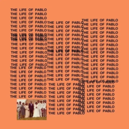

Discografia de Kanye West
Uma seleção dos álbuns mais marcantes do gênio.

The College Dropout (2004)
O début que revolucionou o hip-hop com samples soul e letras pessoais.
- 1. Intro
- 2. We Don't Care
- 3. Graduation Day
- 4. All Falls Down
- 5. I'll Fly Away
- 6. Spaceship
- 7. Jesus Walks
- 8. Never Let Me Down
- 9. Get Em High
- 10. Workout Plan
- 11. The New Workout Plan
- 12. Slow Jamz
- 13. Breathe In Breathe Out
- 14. School Spirit
- 15. Two Words
- 16. Through the Wire
- 17. Family Business
- 18. Last Call

Late Registration (2005)
Uma evolução orquestral com produções grandiosas e colaborações épicas.
- 1. Wake Up Mr. West
- 2. Heard 'Em Say
- 3. Touch the Sky
- 4. Gold Digger
- 5. Skit #1
- 6. Drive Slow
- 7. My Way Home
- 8. Crack Music
- 9. Roses
- 10. Bring Me Down
- 11. Addiction
- 12. Skit #2
- 13. Diamonds from Sierra Leone (Remix)
- 14. We Major
- 15. Skit #3
- 16. Hey Mama
- 17. Celebration
- 18. Skit #4
- 19. Gone
- 20. Diamonds from Sierra Leone
- 21. Late

My Beautiful Dark Twisted Fantasy (2010)
Uma obra-prima maximalista, misturando ambição e emoção crua.
- 1. Dark Fantasy
- 2. Gorgeous
- 3. Power
- 4. All of the Lights (Interlude)
- 5. All of the Lights
- 6. Monster
- 7. So Appalled
- 8. Devil in a New Dress
- 9. Runaway
- 10. Hell of a Life
- 11. Blame Game
- 12. Lost in the World
- 13. Who Will Survive in America

Yeezus (2013)
Um som industrial e agressivo, desafiando as convenções do rap.
- 1. On Sight
- 2. Black Skinhead
- 3. I Am a God
- 4. New Slaves
- 5. Hold My Liquor
- 6. I'm In It
- 7. Blood on the Leaves
- 8. Guilt Trip
- 9. Send It Up
- 10. Bound 2

The Life of Pablo (2016)
Uma colagem caótica e brilhante de gospel, trap e experimentação.
- 1. Ultralight Beam
- 2. Father Stretch My Hands Pt. 1
- 3. Father Stretch My Hands Pt. 2
- 4. Famous
- 5. Feedback
- 6. Low Lights
- 7. Highlights
- 8. Freestyle 4
- 9. I Love Kanye
- 10. Waves
- 11. FML
- 12. Real Friends
- 13. Wolves
- 14. Silver Surfer Intermission
- 15. 30 Hours
- 16. No More Parties in LA
- 17. Facts (Charlie Heat Version)
- 18. Fade

Ye (2018)
Um olhar íntimo e cru sobre a mente de Kanye em 7 faixas.
- 1. I Thought About Killing You
- 2. Yikes
- 3. All Mine
- 4. Wouldn't Leave
- 5. No Mistakes
- 6. Ghost Town
- 7. Violent Crimes

Jesus Is King (2019)
Uma jornada espiritual com corais gospel e beats minimalistas cheios de fé.
- 1. Every Hour
- 2. Selah
- 3. Follow God
- 4. Closed on Sunday
- 5. On God
- 6. Everything We Need
- 7. Water
- 8. God Is
- 9. Hands On
- 10. Use This Gospel
- 11. Jesus Is Lord